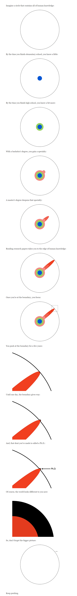

什么是科研
该章节适用于“搞研究”的人，笔者知道很多人为了研究生毕业，或者为了本科保研加分等，迫不得已需要发一些论文，如何去快速产生一篇能发表的文章，如何寻找一个快速接受文章的期刊，如何和编辑扯皮，甚至如何快速水论文（常见手段如叠叠乐等）等非常功利的内容不在本文的讨论范围之内。
小时候，我曾经有当科学家的梦想。但是中间一度有些迷茫，书本里的大科学家、大发明家，比如发明灯泡的爱迪生，做风筝实验的富兰克林离我们都非常遥远。我曾经觉得科研需要亿点点脑洞，才能从从零到一，突然做出一些发明。或者再怎么也要观察到身边一些不寻常的现象，提出一套新的理论去解释一下。自有这个梦想十几年来，我发现我似乎并没有这样的能力。再到后来，大学接触了知网，阅读了上面的一些文献，我脑子里都是问号，“这也算是研究？”。再到后面，有了一定的英语阅读能力，阅读了一些专业领域内的前沿文章，让我对科研有了一定的认识。
科研并不是说要开天辟地地发明一些东西，全世界少说几百万研究人员，也没出几个爱因斯坦级别的人物。更多情况下，我们只是在一个较新的理论框架下，对现有的科学体系做一些完善。有些研究是发现了当前体系的一些缺陷，像法律修正案一样，对当前的体系做一些修修补补；甚至一些研究只是为了让本来束之高阁的理论能够应用到实际生活中。这些，都是研究，都有价值，再怎么说也是进行了尝试，确定了这条路可行。但是并不是所有人都喜欢，或者都想做所有类型的研究，每个人有自己的喜好，也有自己的选择，能够遵从自己的内心，做一些自己认为有价值的改进，并且为人类的科学理论做出一定的贡献，我认为这些都是有价值的研究。
说到什么是科研，就不得不说什么是哲学博士（Doctor of Philosophy），让我想到了如下一张非常生动的图。说到读博士，很多人都会想到Ph.D.，在英文里全称是Doctor if Philosophy，直译为哲学博士。有人可能会发现，绝大多数专业，最高学历的头衔都是Ph.D.，尽管你可能研究的不是哲学，比如计算机科学。这个头衔所说的哲学并不是我们狭义上说的哲学，比如马克思主义哲学，这个哲学有一个更广义的定义，来自其希腊语的意思，即“爱智慧”。作为一个哲学博士，需要在一定领域内发现问题，解决问题，并形成自己的一套方法论，最终经过同行评议，说服别人，我的idea是靠谱的、有效的以及有价值的。

发现问题
首先，发现问题的基础，是对一个特定领域有着一定程度的了解。首先需要知道领域内有哪些人，做过哪些事，瓶颈在哪儿，为什么会有这样的瓶颈，这个瓶颈在现有的科学体系下是否是可攻破的。想要回答这些问题，就需要大量的文献阅读，去总结、概括别人的研究；在一些偏向实践的方向（例如软件工程），可能还需要大量的实践经验，才能发现现有体系下的缺陷。
可以说，一个好的研究，一定是建立在对现有知识体系的总结概括上的，在桌前拍脑袋选题甚至求签选题都是不可取的。
形成一套体系
一个好的研究应该着眼于解决一类相似的问题，而不是过于具象的某一个特定的小问题。曾经看到过一个段子：
科研中最牛的人，比如杨振宁先生，可以达到什么水平呢？就是设计出一件衬衫，然后这件衬衫能穿。
次一级的，比如那些院士们，他们是在衬衫左上方设计一个口袋，发现这里可以装名片，可以别钢笔。
再次一级的人，就是我导师那样的人了，他们发现衬衫左上方的口袋可以装东西，于是就在右上方也设计一个口袋，也可以装东西。
而再次一级的，就是还没有资格带硕士和博士的那些科研工作者，他们做的工作往往就是，发现原来我们可以往衣服上缝口袋，于是赶紧在衬衫后背比较宽敞的地方也缝上一个口袋。
比这个还差的，就是发现原来在衣服上缝口袋有利可图，那为了省事儿，不缝了，干脆双面胶贴一个算了。
还有一些怎么都憋不出成果，可又不想造假的硕士、博士们为了毕业，会在论文里像模像样的讨论一下，当一个人倒立行走的情况下缝的口袋必须口朝下的必要性。
我们不可能指望人人都是杨振宁先生，能够为科学的大厦添上一整层楼，但我们应该尽自己的努力，去关注一些尽量general的问题。如果能够有设计口袋的能力（比如发明了transformer），就不要仅仅研究给口袋变个颜色，或者把口袋换个地方（比如transformer到处套）。自己的能力极限在哪儿，这个一定程度上可以进行训练，但也不是人人都是天才，清楚了自己的极限，尽量向着极限靠，尽量寻找能给你提升的合作者（如导师），能做出的成果，必不会让自己后悔。
同行评议
一个研究到底有没有用呢？这个研究者自己说了不算。但往往科学研究都是像图中那样，超脱现有科学框架之外，我们无法像批数学卷子一样对着标准答案给分。这个时候就需要领域内的“专家们”说了算，大家开了个会，一致觉得你的研究有价值，能够解决行业痛点，那这就是有价值的研究。这个过程呢，就被称为同行评议。可以说我们从硕士博士的开题，答辩，到给期刊投稿，参加学术会议等，都是同行评议的过程。同行专家可能对你的研究挑挑拣拣（比如开题报告），可能质疑你的研究正确性，可能觉得你的研究毫无创新，可能觉得你的研究他单纯不喜欢。这些事情都有可能发生，同行评议不像批卷子，它就是一个比较玄学的过程。我曾跟朋友开玩笑说，一篇文章，今年没中，可能就是那几个PC（Program Committee，程序委员会，可以理解为会议论文的审稿人）看不顺眼，换个会议或者明年换几个人说不定就中了。虽然这个听着像气话，但可能确实如此，学术界缺乏一个非常明确的评价标准，不然爱因斯坦关于相对论的文章也不会被拒稿。当你的工作被同行否定了，不要气馁，跟着审稿意见修改一下，或者坚持己见，直到碰到知己。被否定了不代表你的工作毫无价值，可能知识缺少赏识它的人。